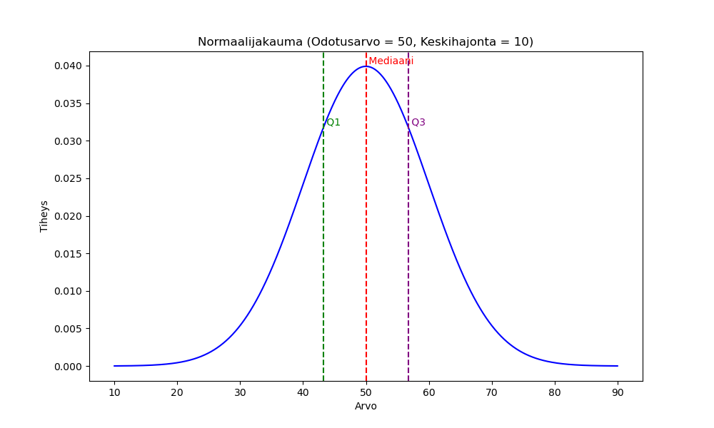
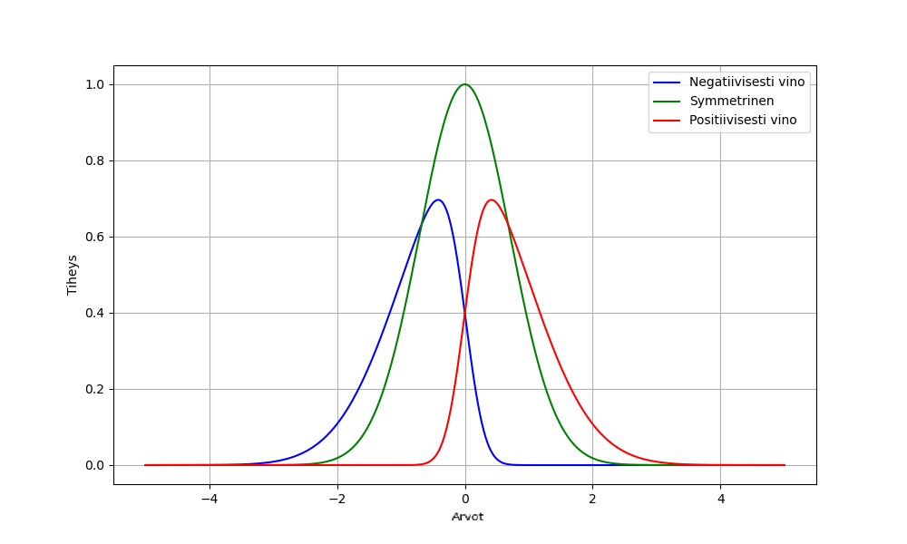
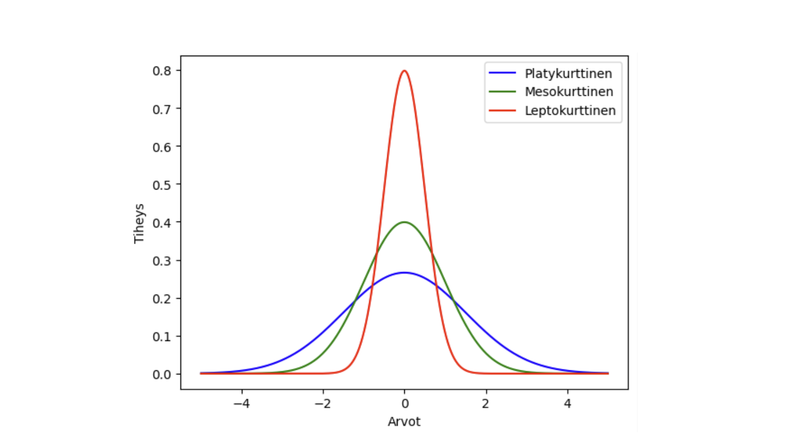
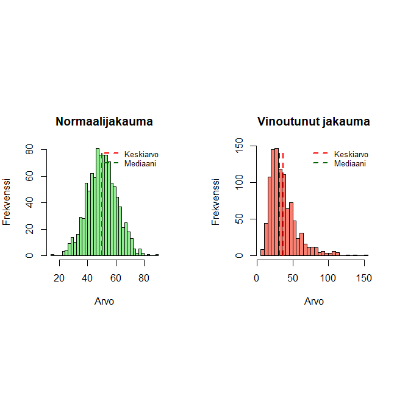

7 Perustunnusluvuista
Perehdytään seuraavaksi muutamiin keskeisiin tilastollisiin tunnuslukuihin ja sitä myöden estimaattoreihin käyttäen tilastotieteessä tarvittavaa matemaattista notaatiota.
Tunnusluku
Tunnusluku (engl. statistic) tarkoittaa aineistosta laskettua lukuarvoa, joka kuvaa otoksen ominaisuuksia.
- Esimerkkejä tunnusluvuista ovat otoskeskiarvo, otosvarianssi ja mediaani.
Kun tarkastellaan satunnaismuuttujia, tunnusluku ei ole enää kiinteä luku vaan satunnaismuuttuja. Tämä johtuu siitä, että otosaineisto koostuu satunnaisista havainnoista, ja siten myös siitä laskettu tunnusluku vaihtelee otoksesta toiseen.
7.1 Perustunnuslukuja
Välimatka- tai suhdeasteikollisen muuttujan havaintoarvojen jakaumaa voidaan karakterisoida mm. seuraavilla perustunnusluvuilla, joita tyypillisesti raportoidaan tilastollisten analyysien yhteydessä.
- Havaintoarvojen keskimääräistä sijaintia kuvataan aritmeettisilla keskiarvoilla.
- Havaintoarvojen hajaantuneisuutta tai keskittyneisyyttä kuvataan otosvarianssilla tai otoskeskihajonnalla.
- Kahden muuttujan havaintoarvojen parien (lineaarista) riippuvuutta kuvataan otoskovarianssilla ja otoskorrelaatiokertoimella (ks. seuraava luku).
Ts. oletetaan seuraavassa, että meillä on käytettävissä välimatka- tai suhdeasteikollisen muuttujan havaittuja arvoja eli otoskooltaan \(n\):n havainnon suuruinen otos havaintoja \((y_1, y_2, \ldots, y_n)\). Käsitellään seuraavassa otoskeskiarvoa ja otosvarianssia.
Otoskeskiarvo
Havaintoarvojen (y_1, y_2,, y_n) aritmeettinen otoskeskiarvo on \[\begin{equation*} \bar{y} = \frac{1}{n} \sum_{i=1}^{n} y_i = \frac{1}{n}(y_1+\cdots+y_n). \end{equation*}\] Havaintoarvojen aritmeettinen keskiarvo kuvaa havaintoarvojen keskimääräistä arvoa. Osoittautuu, että (aritmeettinen) keskiarvo toimii tilastollisessa mielessä hyvänä estimaattorina satunnaismuuttujan (Y) odotusarvolle \(\mathsf{E}(Y)\).
Esimerkki. Tarkastellaan tämän luvun läpi seuraavaa pientä tilastoaineistoa (otosta), jossa havaintoarvot \(y_i\) ovat 45, 67, 23, 89, 45, 56, 78, 34, 45, 67, 90, 12. Ts. \(y_1=45, y_2=67\), ja lopulta \(y_{12}=12\) eli selvästikin otoskoko \(n=12\).
Otoskeskiarvo on tällöin \[\begin{equation*} \bar{y} = \frac{1}{12} \sum_{i=1}^{12} y_i = \frac{1}{12}(45+67+23+89+45+56+78+34+45+67+90+12) = 54.25. \end{equation*}\]
Otosvarianssi
Otosvarianssi: Havaintoarvojen \((y_1, y_2,\ldots, y_n)\) otosvarianssi on muotoa \[\begin{equation*} s^2_y = \frac{1}{n-1} \sum_{i=1}^{n} (y_i - \bar{y})^2, \end{equation*}\] jossa (\(\bar{y}\)) on y-havaintoarvojen aritmeettinen otoskeskiarvo (määriteltiin yläpuolella).
Esimerkki, jatkoa. Jatketaan ylläolevan aineiston parissa. Otosvarianssi saadaan siis seuraavasti \[\begin{equation*} s^2_y = \frac{1}{11} \sum_{i=1}^{12} (y_i - 54.25)^2 = \frac{1}{11}\Big((45-54.25)^2 + \cdots +(12-54.25)^2 \Big) = 618.75. \end{equation*}\]
Vastaavalla tavalla mitä edellä voidaan määritellä esimerkiksi \(x\) havaintoarvojen otoskeskiarvo \(\bar{x}\) ja otosvarianssi \(s^2_x\). Havaintoarvojen varianssi mittaa havaintoarvojen hajaantuneisuutta tai keskittyneisyyttä havaintoarvojen aritmeettisen keskiarvon suhteen.
Otoskeskihajonta
Otoskeskihajonta: Havaintoarvojen (y_1, y_2,, y_n) otoskeskihajonta \[\begin{equation*} s_y = \sqrt{s^2_y} = \sqrt{\frac{1}{n-1} \sum_{i=1}^{n} (y_i - \bar{y})^2}, \end{equation*}\] jossa \(\bar{y}\) on y-havaintoarvojen aritmeettinen keskiarvo. Huomaa suhde otosvarianssiin (neliöjuuri siitä).
Esimerkki, jatkoa. Otoskeskihajonta saadaan siis otosvarianssista suoraviivaisesti \[\begin{equation*} s_y = \sqrt{s^2_y} = \sqrt{\frac{1}{11} \sum_{i=1}^{12} (y_i - 54.25)^2} = \sqrt{\frac{1}{11}\Big((45-54.25)^2 + \cdots +(12-54.25)^2 \Big)} \approx 24.87. \end{equation*}\]
Jälleen vastaavalla tavalla voidaan määritellä \(x\)-havaintoarvojen otoskeskihajonta \(s_x\). Havaintoarvojen keskihajonta (ja varianssi) mittaa siis havaintoarvojen hajaantuneisuutta tai keskittyneisyyttä havaintoarvojen aritmeettisen keskiarvon suhteen.
7.2 Otoskeskiarvo ja otosvarianssi estimaattoreina
Tilastollisessa tutkimuksessa on tavoitteena estimoida aineiston generoineen todennäköisyysjakauman tuntemattomat parametrit käyttäen havaintoaineistoa. Edellä esiteltiin jo havaintoaineistolle laskettavia tyypillisiä tunnuslukuja.
Miten luodaan tilastomatemaattinen yhteys edellisen luvun aineistoon ja sille laskettuihin konkreettisiin numeerisiin tunnuslukujen arvoihin? Seuraavassa muodostetaan tilastotieteelle keskeistä yhteyttä parametrien ja niitä arvioivien, “estimoivien”, estimaattorien välille.
Tässä luvussa keskitytään lyhyesti vain otoskeskiarvoon ja otosvarianssiin normaalijakauman parametrien estimaattoreina ja siihen miten tämä näkökulma liittyy ja toisaalta eroaa edellä esitellyistä tietylle yksittäiselle otokselle laskettavista tunnusluvuista.
Merkitään satunnaismuuttujaa yhä \(Y\) (isolla kirjaimella) ja satunnaismuuttujan realisaatiota pienellä kirjaimella \(y\).
Otoskokoa, eli otokseen osallistuvien tilastoyksiköiden määrää, merkitään edelleen \(n\):llä ja tilastoyksiköitä indeksoidaan alaindeksillä (i=1,,n).
Otoksen poimimisen jälkeen satunnaismuuttujat (Y_1, , Y_n) saavat havaituiksi arvoikseen havaintoarvot (y_1, , y_n) (ts. (Y_1=y_1, , Y_n = y_n)). Näin jo edellä analysoitu yksittäinen havaintoaineisto on siis yksi satunnaisotos siitä jakaumasta, jota satunnaismuuttuja \(Y\) noudattaa.
Otosvaihtelu Tämä tarkoittaa siis sitä, että kun otos poimitaan useita kertoja, niin saamme käytännössä aina erilaisen havaitun/realisoituneen satunnaisotoksen (y_1, , y_n). Tätä vaihtelua kutsutaan myös otosvaihteluksi.
Satunnaisotos normaalijakaumasta. Olkoot (Y_1, , Y_n) riippumattomia ja normaalisti jakautuneita satunnaismuuttujia, joille pätee (\(Y_i \thicksim \mathsf{N}(\mu,\sigma^2)\)), jossa (\(\mu\)) ja (\(\sigma^2\)) ovat normaalijakauman muodon määräävät parametrit. Parametrien (\(\mu\)) ja (\(\sigma^2\)), eli normaalijakauman odotusarvon ja varianssin (ks. odotusarvon ja varianssin määritelmät), arvoja ei tunneta ja tavoitteena onkin päätellä, estimoida, niiden arvot käytettävissä olevaa aineistoa käyttäen.
Otoskeskiarvo. Satunnaismuuttujien (huom!) (Y_1, , Y_n) otoskeskiarvo on \[\begin{equation*} \bar{Y} = \frac{1}{n}(Y_1 + \cdots + Y_n) = \frac{1}{n} \sum_{i=1}^{n} Y_i. \end{equation*}\] Yksittäisen otoksen otoskeskiarvo on tällöin sm:jien realisaatioiden aritmeettinen keskiarvo (ks. edellä ja esimerkki konkreettisesta otoksesta) \[\begin{equation*} \bar{y} = \frac{1}{n} \sum_{i=1}^{n} y_i. \end{equation*}\]
Otoskeskiarvo \(\bar{Y}\) on siis satunnaismuuttuja, jonka saama arvo \(\bar{y}\) vaihtelee satunnaisesti otoksesta toiseen johtuen satunnaisotannasta.
Voidaan osoittaa, että kun satunnaismuuttujat ovat samoin jakautuneet (noudattavat samaa jakaumaa) odotusarvoltaan (), on otoskeskiarvo jakauman odotusarvon harhaton estimaattori. Ts. pätee tulos \[\begin{equation*} \mathsf{E}(\bar{Y}) = \mu. \end{equation*}\] Täten aineiston otoskeskiarvo kuvaa aineiston perusjoukon tilastollisen mallin odotusarvoa. Ts. otoskeskiarvo on estimaattori, joka estimoi harhattomasti aineistoa generoivan todennäköisyysjakauman odotusarvoa!
- Huomioi, että satunnaisuudesta johtuen yksittäinen numeerinen otoskeskiarvo voi poiketa paljonkin jakauman odotusarvosta. Tästä huolimatta otoskeskiarvo on kuitenkin (tietyssä mielessä) paras mahdollinen arvio todellisen jakauman odotusarvosta.
Populaatiovarianssi on satunnaismuuttujan kautta ajateltuna on \(\sigma^2 = \mathsf{E}[(Y-\mu)^2]\).
Populaatiovarianssia voidaan harhattomasti estimoida käyttäen otosvarianssia (satunnaismuuttujille) \[\begin{equation*} S^2= \frac{1}{n-1} \sum_{i=1}^{n} (Y_i - \bar{Y})^2. \end{equation*}\] Tämän yksi realisaatioista perustuu yksittäiselle aineistolle laskettuun otosvarianssiin (merkitään \(s^2\) tai \(s^2_y\)), ks. edellä olevat kaavat.
Ts. tämän (ala)luvun keskeinen huomio on, että otoskeskiarvo (\(\bar{Y}\)) ja otosvarianssi (\(S^2\)) ovat siis satunnaismuuttujien kautta asiaa ajateltaessa satunnaismuuttujia, joiden saamat konkreettiset numeeriset arvot (\(\bar{y}\) ja \(s^2\)) vaihtelevat satunnaisesti otoksesta toiseen, ja toimivat saatavilla olevasta aineistosta laskettuna kohdepopulaation jakauman parametrien estimaattoreina.
Estimaattoreihin, niiden ominaisuuksiin ja tarkempaan perusteoriaan perehdytään tarkemmin Osassa II.
7.3 Muita tunnuslukuja
Tilastollisia analyysejä tehtäessä johtopäätösten ja objektiivisten tulkintojen tueksi tarvitaan tunnuslukuja. (Otos)keskiarvoa ja (otos)varianssia tunnuslukuina tarkasteltiin jo edellä. Tunnuslukuja on paljon, ja jokainen niistä valottaa muuttujan jakaumaa eri näkökulmista.
Jakaumien tunnusluvut voidaan jakaa sijaintilukuihin, hajontalukuihin ja muihin tunnuslukuihin. Kahdesta ensimmäisestä esimerkkejä ovat (kuten edellä nähtiin) keskiarvo ja varianssi tai keskihajonta (välimatka- ja suhdeasteikon havaintojen tapauksessa).
- Todetaan tässä kohtaa havaintojen hajaantuneisuutta mittaavista tunnusluvuista, että erityisesti järjestysasteikollisten muuttujien tapauksessa hajaantuneisuutta voidaan perustaa ns. järjestystunnuslukuihin. Ts. havaintoarvot voidaan järjestää suuruusjärjestykseen pienimmästä suurempaan. Ts. \(k\). järjestystunnusluku on \(k\). havaintoarvo suuruusjärjestyksessä. Jo aiemmin esitelty prosenttipiste liittyy kiinteästi suuruusjärjestykseen järjestettyyn aineistoon.
Esitellään seuraavassa vielä lyhyesti muutamia muita tunnuslukuja.
Moodi
Moodi eli tyyppiarvo on havaintoaineiston yleisin muuttujan arvo tai se on luokka, jolla on suurin frekvenssi.
Esimerkki, jatkoa. Jatketaan ylläolevan 12 havainnon esimerkkiaineiston käsittelyä. Ko. aineiston moodi on 45.
Mediaani
Mediaani on järjestetyn havaintoaineiston keskimmäinen arvo. Mediaani siis jakaa järjestetyn havaintoaineiston kahteen osaan siten, että puolet arvoista on mediaania pienempiä ja puolet arvoltaan mediaania suurempia.
- Jos havaintoarvoja on parillinen määrä, niin tällöin esitetään jompikumpi keskimmäisistä arvoista tai joskus niiden keskiarvo.
Esimerkki, jatkoa. Tarkasteltavan esimerkkiaineiston mediaania etsittäessä järjestetään havainnot suuruusjärjestykseen: 12, 23, 34, 45, 45, 45, 56, 67, 67, 78, 89, 90. Tällöin mediaanina voidaan pitää havaintoarvojen 45 ja 56 keskiarvoa eli 50.5.
Luokitteluasteikolla mitattaville muuttujille ei ole olemassa luontevia sijaintilukuja keskilukujen yhteydessä pl. moodi.
Fraktiilit ja desiilit
Järjestysasteikolla mitatuille muuttujille voidaan mediaanin lisäksi määrittää fraktiileja: pp %:n fraktiili jakaa tilastoaineiston kahteen osaan siten, että kyseistä fraktiilia pienempiä havaintoarvoja on pp %.
- Eniten käytettyjä fraktiileja ovat kvartiilit. Alakvartiili (Q_1) on 25 %:n fraktiili, ja yläkvartiili (Q_3) on 75 % fraktiili. Ts. alakvartiili on mediaania pienempien havaintoarvojen mediaani ja yläkvartiili on mediaania suurempien havaintoarvojen mediaani.
- Tietyistä fraktiileista käytetään nimitystä desiili. Ensimmäinen desiili on 10 % fraktiili ja esim. yhdeksäs desiili on 90 % fraktiili.
Esimerkki, jatkoa. Tarkasteltavan esimerkkiaineiston (ks. yllä) alakvartiili (Q1) on 42.25 ja yläkvartiili (Q3) 69.75.
Alakvartiili (Q1, 25 %): \[\begin{align*} Q_1^{\text{pos}} &= 1 + (n - 1) \cdot 0.25 = 1 + 11 \cdot 0.25 = 3.75 \\\\ Q_1 &= y^{(3)} + 0.75 \cdot (y^{(4)} - y^{(3)}) \\ &= 34 + 0.75 \cdot (45 - 34) \\ &= 34 + 8.25 \\ &= 42.25, \end{align*}\] jossa \(y^{(k)}\) on \(k\):nnes järjestetty tarkasteltavan otoksen havaintoarvo (sen järjestetyssä jonossa).
Yläkvartiili (Q3, 75 %): \[\begin{align*} Q_3^{\text{pos}} &= 1 + (n - 1) \cdot 0.75 = 1 + 11 \cdot 0.75 = 9.25 \\\\ Q_3 &= y^{(9)} + 0.25 \cdot (y^{(10)} - y^{(9)}) \\ &= 67 + 0.25 \cdot (78 - 67) \\ &= 67 + 2.75 \\ &= 69.75. \end{align*}\]
Huom. ala-ja yläkvartiilin muodostuksessa voidaan käyttää muita/erilaisia valintoja mitä edellä ja siten lopputulos voi olla myös (hieman) erilainen.
Hajontalukuja: Varianssin/keskihajonnan lisäksi, jos muuttuja on mitattu vähintään järjestysasteikolla, sille voidaan määrittää vaihteluväli ja kvartiiliväli.
Vaihteluväli
Vaihteluväli kuvaa aineiston kokonaispeittoa ja siinä ilmoitetaan aineiston pienin havainto ja suurin havainto. Ts. vaihteluväli=(pienin havainto, suurin havainto). Voidaan myös laskea suurimman ja pienimmän havainnon välinen erotus.
Esimerkki, jatkoa. Tarkasteltavan esimerkkiaineiston tapauksessa vaihteluväli on selvästikin (12,90). Näiden välinen erotus 90-12=78.
Vinous ja kurtoosi (ja ylihuipukkuus)
Satunnaisotoksille voidaan laskea myös niiden jakauman muotoa kuvaavat tunnusluvut vinous ja kurtoosi (ks. Alho ym., 2023), jota kutsutaan ajoittain myös huipukkuudeksi. Vinous ja kurtoosi/huipukkuus voidaan määrittää välimatka- ja suhdeasteikon muuttujille.
Vinous ja kurtoosi. Tarkastellaan satunnaismuuttujaa \(Y\), jolla on odotusarvo \(\mu = \mathsf{E}(Y)\) sekä keskusmomentit \(\mu_k = \mathsf{E}[(Y − \mu)^k], k = 2, 3, 4\), keskihajonnan ollessa \(\sigma = \sqrt{\mu_2}\) (ks. keskihajonnan määritelmä).
Standardoitua 3. momenttia \(\mu_3 / \sigma^3\) kutsutaan (jakauman) vinoudeksi (eng. skewness).
Normaalijakauma on symmetrinen jakauma ja sen vinous on siten 0.
Vinoutunut jakauma (skewed distribution) kuvaa tilannetta, jossa aineiston jakauma ei ole symmetrinen, vaan se kallistuu voimakkaasti jompaan kumpaan suuntaan.

Vastaavasti standardoitua 4. momenttia \(\gamma = \mu_4 / \sigma_4\) kutsutaan kurtoosiksi (huipukkuudeksi, eng. kurtosis).
Ajoittain kurtoosi määritellään vielä \(\kappa = \gamma -3\), josta käytetään englanniksi termiä excess kurtosis (suoraviivaisena käännöksenä ylihuipukkuus). Jos \(Y\) noudattaa normaalijakaumaa, niin tällöin \(\gamma=3\) ja siten \(\kappa=0\).
Jakaumille joille \(\kappa <0\), \(\kappa=0\) ja \(\kappa>0\) käytetään englanninkielisiä termejä platykurtic, mesokurtic ja leptokurtic. Näiden suomenkieliset käännökset ovat (ks. Alho ym., 2023) platykurttinen, mesokurttinen ja leptokurttinen.

Vinous ja kurtoosi mittaavat siis kumpikin omalla tavallaan jakauman poikkeamaa normaalijakaumasta. Alho ym. (2023) ehdottavat termin kurtoosi käyttöä kun viitataan pelkästään standardoituun 4. momenttiin \(\gamma\) tai sen muunnokseen \(\kappa\) ja/tai ao. suureiden arvoihin. Synonyymeiksi soveltuvat peakedness ja huipukkuus silloin, kun puhutaan jakauman muodosta yleisellä tasolla ao. ominaisuuden tarkastelun perustuessa asianmukaisesti määriteltyyn järjestysrelaatioon ja sitä noudattavaan huipukkuusmittaan.
Vinoutuneet jakaumat ovat yleisiä esimerkiksi tulo- ja myyntidatassa, joissa pieni osa havaintoja voi vaikuttaa voimakkaasti kokonaisuuteen. Tällöin perinteiset tunnusluvut, kuten keskiarvo ja keskihajonta, voivat antaa harhaanjohtavan kuvan, koska ne ovat herkkiä poikkeaville arvoille. Siksi on tärkeää käyttää analyysimenetelmiä ja tunnuslukuja, jotka huomioivat vinoutuneisuuden – kuten mediaani ja kvartiiliväli. Tämänkaltainen datan monipuolinen tarkastelu auttaa paljastamaan aineiston mahdollisia yksityiskohtia, jotka muuten jäisivät piiloon tavanomaisia perusmenetelmiä käytettäessä.
Esimerkki. Alla olevassa kuvassa on kuvattuna oikealla satunnaisotos jakaumasta, joka on oikealle vino ja huipukas.
Vertailun vuoksi vasemmalla on myös normaalijakaumaa noudattava aineisto, jossa otoskeskiarvo ja mediaani ovat samalla kohdalla.
Huomataan, että oikealle vinossa jakaumassa suuremmat realisaatiot ovat suhteellisesti todennäköisempiä kuin pienemmät. Kuvatun aineiston vinous on (1.4), joka tarkoittaa oikealle vinoa jakaumaa. Vastaavasti negatiiviset arvot vinoudelle kuvaavat vasemmalle vinoa jakaumaa.
Vastaavasti huomataan että aineiston havainnot ovat verrattain keskittyneitä, eli että jakauma josta aineisto on peräisin on huipukas/kurtoosinen. Kuvatun aineiston kurtoosi saa yli 6:n olevan arvon, eli se on selvästi huipukkaampi kuin normaalijakauma (kurtoosi \(\gamma=3\)). Tällöin on siis kysymys ylihuipukkuudesta (excess kurtosis) on yli kolmen.
Vinoa ja huipukasta jakaumaa ilmentävät havaintoaineistot ovat tyypillisiä tutkimusta tehdessä ja niiden käsittely, mallintaminen ja niihin sovellettavat tilastollisen päättelyn menetelmät vaativat jälleen pidemmälle meneviä tilastotieteen opintoja!

Vinoutuneisiin jakaumia (normaalijakaumaan verrattuna) ja ylipäätään jakaumien “häntätodennäköisyyksien” tärkeyttä korostaa myös Nassim Nicholas Taleb teoksissaan The Black Swan (2007) ja Antifragile (2012). Normaalijakaumaan perustuva ajattelu voi johtaa harhaan erityisesti epävarmoissa ja monimutkaisissa järjestelmissä. Mustat joutsenet Hänen mukaansa niin sanotut mustat joutsenet – harvinaiset, yllättävät mutta vaikutuksiltaan suuret tapahtumat – eivät ole poikkeuksia, vaan usein juuri ne, jotka muovaavat historiaa ja taloutta ratkaisevasti.
Taleb kritisoi riskimallinnusta, joka sivuuttaa paksuhäntäisten jakaumien merkityksen: ääripäät eivät ole vain tilastollisia poikkeuksia, vaan voivat hallita koko ilmiön käyttäytymistä. Hänen viestinsä on, että meidän tulisi suhtautua epävarmuuteen vakavasti ja rakentaa järjestelmiä, jotka eivät vain kestä sokkeja – vaan jopa hyötyvät niistä (antifragiliteetti).